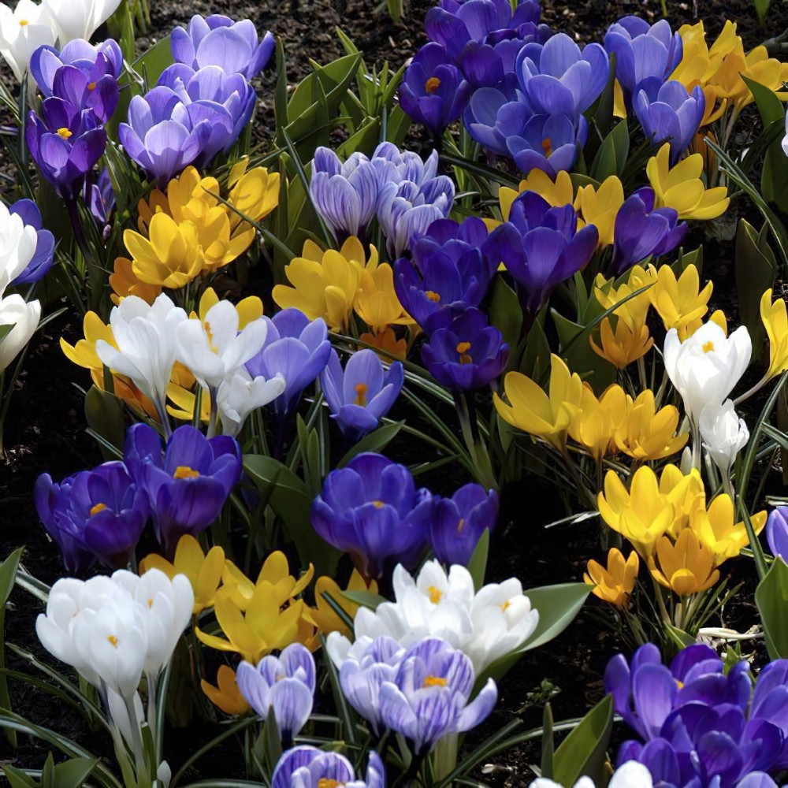
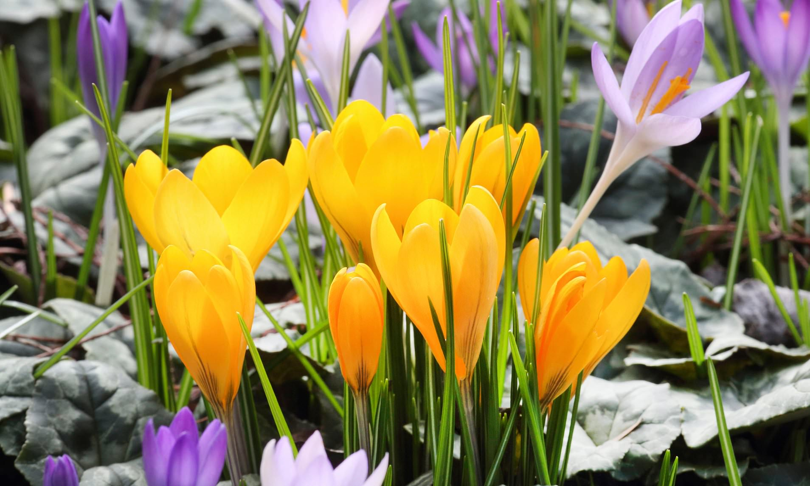
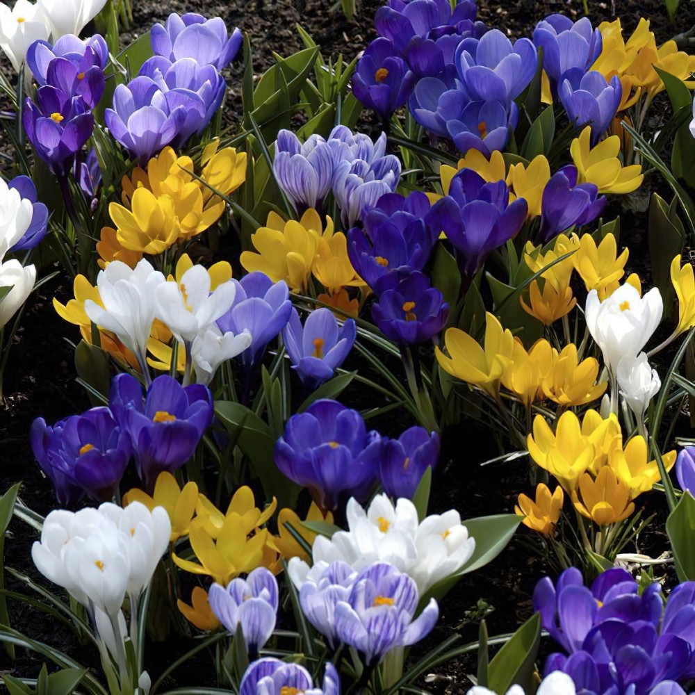
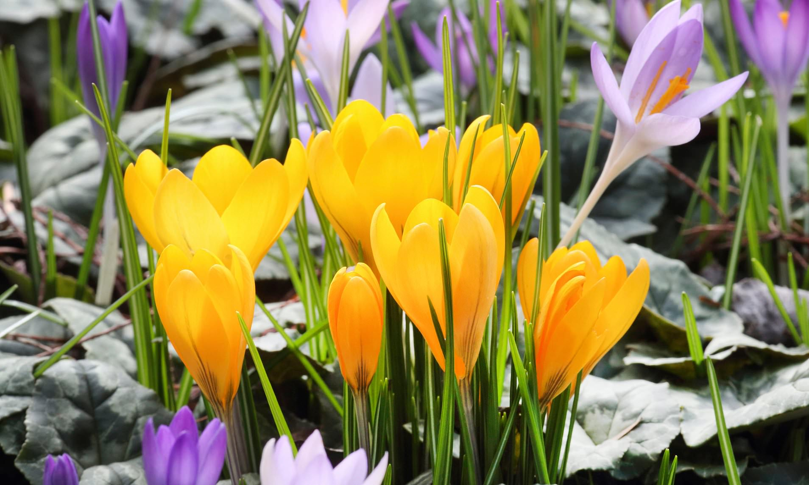

Common Name: Crocus
Botanical Name: Crocus
Chinese Name: 番紅花
 



Other references
RHS
Gardenia
Gardeners' World
番红花（Saffron (/ˈsæfrɒn/), 学名：Crocus sativus）或称藏红花、西红花，是一种鸢尾科的多年生花卉。全世界共有约80-90种番红花。番红花是西南亚原生种，但由希腊人最先开始人工栽培。主要分布在欧洲、地中海及中亚等地，明朝时番红花就传入中国，《本草纲目》将它列入药物之类，中国浙江等地有栽培。它是一种名贵的中药材，具有强大的生理活性，其柱头在亚洲和欧洲作为药用，有镇静、祛痰、解痉作用，用于胃病、调经、麻疹、发热、黄胆、肝脾肿大等的治疗。
番红花植株较小，高8-12英寸。花叶细长，长得像松树叶子。番红花的颜色取决于花种，一般是黄色，白色，淡紫色。大多冬季春季开花。番红花的花朵长在高高的花筒上，呈杯状，花朵有六瓣。雌雄同株，三根红色的雌蕊，三根黄色的雄蕊。地下鳞茎呈球状。
番红花有三个世界之最：一是世界上最贵的药用植物；二是世界上最好的染料；三是世界上最高档的香料。番红花是全世界最贵的香料，大约要16,000朵番红花才能收集到100公克的雌蕊柱头，因为每一朵紫色的番红花只有三个柱头，而柱头的取得必须在日出前以人工完成采摘以避免花朵枯萎而失去采收价值，采收后必须在干燥脱水后才能分级出售。虽然番红花价格不菲，但好的番红花香料只要使用极微的分量即可。
目前，世界上大多数的番红花都产自伊朗。伊朗种植番红花的历史相当悠久。伊朗平均每年番红花的产量约占全球番红花总产量的70%-90％。番红花是经印度传入西藏，由西藏再传入中国内地。所以，人们把由西藏运往内地的番红花，误认为西藏所产，称做“藏红花”。 在藏传佛教里常看到的藏传佛教徒以红花来供养舍利子使舍利子增生，传统的藏传佛教徒会把红花放在八供水里，让水变成橘红色，非常漂亮，以此供佛菩萨。除此，也有些 藏传佛教徒会把藏红花放进水里，然后以红花水擦在经文咒语上，然后卷起来，作为佛像或转经轮或舍利塔入藏等等用途。另外，就是在修持四加行曼达供时，都会 以红花水拭擦曼达盘的。也有人用红花水来清洗新的念珠之类的。
番红花一般经口食用时并不会造成危险，但若大量食用会有急性中毒的危险，一次摄取5g以上的量会有严重的副作用，致死量大约在12～20g之间。
关于藏红花的传说有很多，中国的西方的都有。个人比较喜欢来自希腊的一个版本，关于信使赫尔墨斯（Hermes）和凡人克鲁斯科斯（Krókos）的故事。两个朋友有一天玩扔飞盘，赫尔墨斯意外瞄准失误，飞盘撞在了科鲁科斯的头上，这是一个致命的伤口。当克鲁斯科斯临终时，三滴血从他的头洒到地上，于是和他同名的植物出现了。藏红花最明显的是有三根红色的雌蕊，三根黄色的雄蕊。